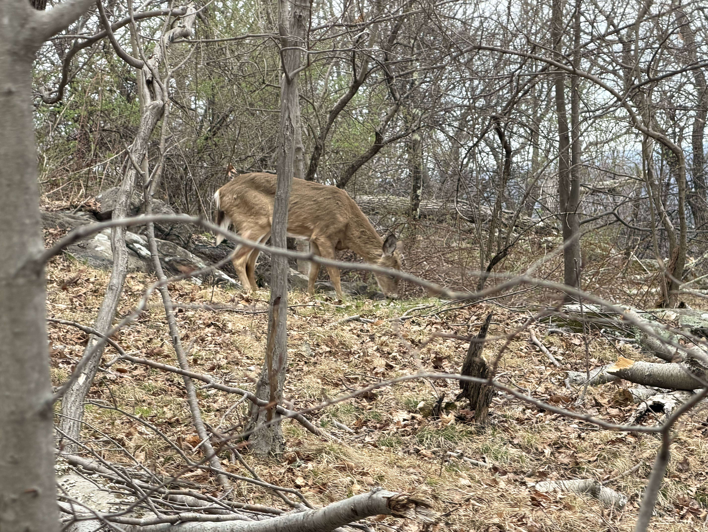

Wildlife Along the Trail
One of the first things I noticed during the hike was how active everything felt even early in the morning. A lot of the reservation stays heavily wooded, so wildlife shows up pretty often along the trails. It feels different from smaller parks where you barely see anything besides squirrels or birds.

The deer stood there for a few seconds before disappearing back into the trees. Moments like that slow the hike down in a good way because everyone actually stops paying attention to their phones for a minute. The reservation starts feeling less like a regular park and more like actual wilderness once you run into animals this close to the trail.